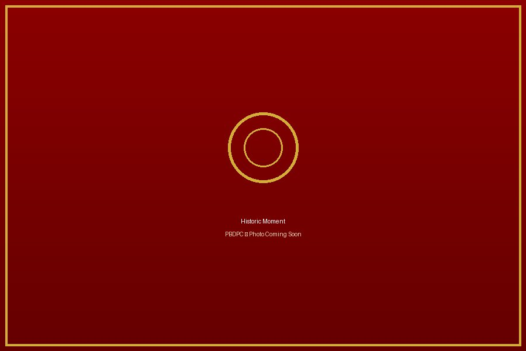
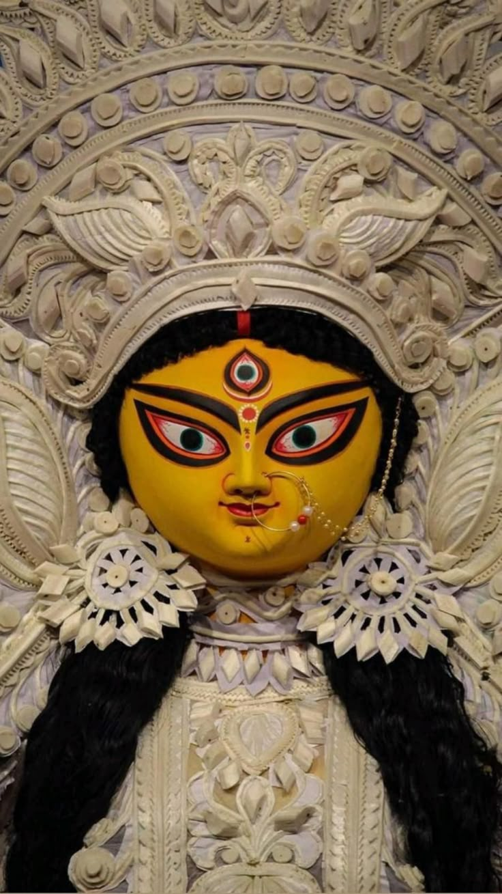
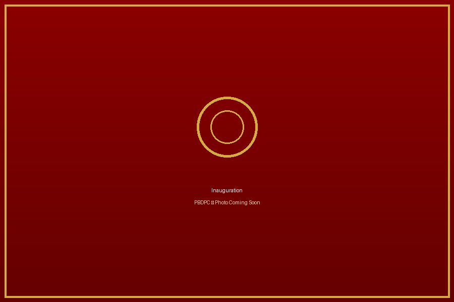

The Story of Faith, Unity and Devotion
A journey spanning generations, shaped by faith, community and devotion.
A Journey Through More Than Seven Decades
Protappur Baroari Durga Puja Committee was established in 1948 through the collective efforts of a few devoted villagers.
What began as a humble community initiative has now grown into one of the respected traditional Durga Pujas of Murshidabad.
Every stage of this journey— from a temporary bamboo shrine to today's magnificent temple— reflects the unwavering faith, hard work and unity of the people of Protappur.
Major Milestones
Beginning of Durga Puja
A few villagers started the first community Durga Puja using a temporary bamboo and straw structure.
Fire Accident
A fire destroyed the temporary structure, but the devotion of the villagers remained stronger than ever.
Land Donation
A generous villager donated land for constructing a permanent temple.
Mud Temple
A mud temple was first built on the donated land, marking the beginning of a permanent place of worship.
The Beginning
According to village elders, there was a time when Durga Puja was not celebrated in Protappur.
A group of dedicated villagers came together with a common vision to establish a community Durga Puja for everyone.
Despite limited resources, their devotion gave birth to a tradition that continues today.

The Fire Incident
During the early years of the Durga Puja, the temporary bamboo and straw structure accidentally caught fire.
Although the incident caused significant damage, the villagers never allowed the tradition to stop. Their faith in Maa Durga remained stronger than every challenge.
This event became a turning point, inspiring everyone to dream of building a permanent temple.


Land Donation
Understanding the importance of establishing a permanent place of worship, a generous villager donated land for the temple.
This noble contribution became the foundation upon which future generations continued to preserve the worship of Maa Durga.
The donated land remains the spiritual heart of our community today.
A Humble Mud Temple
After receiving the land, the villagers built a simple mud temple.
Though modest in appearance, it became the centre of devotion, prayer and community gatherings.
Every brick, every wall and every ritual reflected the dedication of the villagers.


From Mud Temple to Brick Temple
As the years passed, the mud temple gradually became weak due to natural ageing.
With the support of villagers, the temple was rebuilt using bricks, lime and traditional construction techniques.
This marked another important milestone in the history of Protappur Baroari Durga Puja Committee.
Strength Through Unity
Committee Changes
Like many long-standing community organisations, the committee experienced different leadership changes over the years.
These transitions helped shape the organisation and prepare it for future development.
Community Support
Despite various challenges, the people of Protappur never allowed the Durga Puja tradition to stop.
Generation after generation, villagers continued to contribute their time, effort and resources.
Construction of the Present Temple

When the old brick temple became unsafe, the committee decided to build a completely new Durga Temple.
The construction was made possible through the generous support of villagers, nearby communities, devotees and well-wishers.
The present temple stands today as a symbol of faith, unity, service and cultural heritage.
Inauguration of the New Temple

One of the most significant moments in the history of Protappur Baroari Durga Puja Committee was the inauguration of the newly constructed temple on 10 October 2021 (Maha Panchami, 23 Ashwin 1428 Bangabda).
The sacred inauguration ceremony was performed by Padma Shri Swami Pradiptananda Ji Maharaj (Kartik Maharaj) whose blessings marked the beginning of a new chapter in the temple's history.
The completion of the temple was made possible through the collective contributions of villagers, devotees and well-wishers.
A Living Heritage
Today, Protappur Baroari Durga Puja Committee is not only a Durga Puja organiser but also a spiritual, cultural and social institution serving the people of Protappur and nearby villages.
Every year, the temple celebrates Sharadiya Durga Puja, Kojagari Lakshmi Puja and Sri Rama Navami with great devotion and community participation.
The committee remains committed to preserving traditional rituals, promoting cultural values and serving society for future generations.
Our Journey At A Glance
"From a humble bamboo shrine in 1948 to a magnificent temple today, our journey reflects the unwavering faith, unity and devotion of generations of villagers."
Be A Part of Our Continuing History
We warmly invite devotees, researchers, visitors and cultural enthusiasts to visit Shri Shri Durga Temple and become a part of our continuing history.